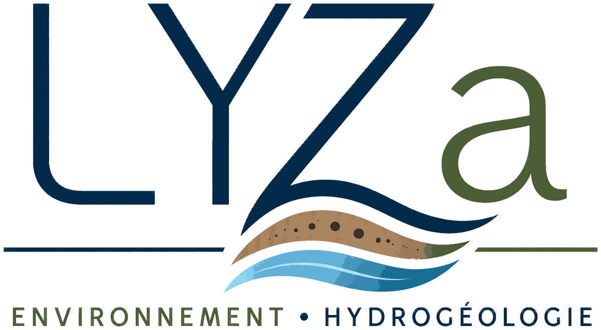

Léo Yecora-Zorzano
Ingénieur hydrogéologue
Regnéville-sur-Mer — Manche
Forages d'eau · Déclarations · Avis hydrogéologiques
Coupes géologiques prévisionnelles, rapports de fin de travaux, déclarations : je prépare la partie écrite de vos forages pendant que vous forez. Hydrogéologue installé à Regnéville-sur-Mer, je connais le sous-sol du département et je réponds vite.
Établie à partir de la carte géologique et des forages voisins de la Banque du sous-sol : formations et aquifères attendus, profondeur probable. Remise sous 48 heures ouvrées.
Mise en forme de vos relevés de chantier et interprétation de l'essai de pompage : transmissivité, débit d'exploitation conseillé.
Loi sur l'eau jusqu'à fin 2027, puis code minier ; examen au cas par cas pour les forages de 50 m et plus ; DUPLOS pour les puits domestiques.
Modèles de documents conformes à l'arrêté du 18 mars 2026, organisation des données de chantier, références à présenter à l'audit.
Appréciation rapide des risques pour les eaux souterraines et superficielles, avec prescriptions. Y compris en urgence, par exemple pour un enfouissement exceptionnel de cadavres d'animaux.
Déclaration au titre de la loi sur l'eau avec document d'incidence, demande d'examen au cas par cas, déclaration au code minier.
Programme analytique adapté au site, prélèvement, envoi à un laboratoire spécialisé et note de synthèse des résultats.
Relevés de niveau de nappe et prélèvements d'eau souterraine, envoyés au laboratoire dans les délais.
Installé au centre de la Manche : un passage sur le terrain reste simple quand il est utile.
Socle armoricain, petits bassins sédimentaires, marais : dans la Manche, les nappes changent d'un secteur à l'autre.
Banque du sous-sol, Hub'Eau, Géorisques, lues avec LYZa, mon outil de lecture environnementale à l'adresse.
Ingénieur hydrogéologue, plus de dix ans en bureau d'études : un avis argumenté, même quand il est réservé.
Position du forage ou du site, usage prévu, et vos relevés de chantier une fois les travaux faits.
Un prix forfaitaire par forage ou par dossier, connu avant de commencer.
En PDF, prêts à joindre au dossier de l'ouvrage ou à transmettre à l'administration.